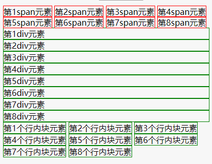

One minute
8 - [css全解]css基础
1. 我怎么知道哪些浏览器兼容哪些特性呢？
a：几十种浏览器全部跑一遍
b：使用 caniuse.com
2.语法超级简单
语法 1
选择器{
属性名:属性值
/*这是一个注释*/
}
p{
color:blue;
background:red;
}
!注意事项
a：所有符号都是英文符号，如果写错了，浏览器会警告
b：区分大小写，a 和 A 是不同东西
c：最后一个分号可以省略，但建议不要省略
d：任何地方写错了，都不会报错，浏览器会直接忽略
语法 2：@语法
@charset “utf-8”;
@import url(2.css);
@media(min-width:100px) and (max-width:200px){ }
!注意事项
a：@charset 必须放在第一行
b：前面两个@语法必须以分号;结尾
c：charset 是字符集的意思，但是 utf-8 是字符编码
3.border 调试法
a：怀疑某个元素有问题就给这个元素加 border
b：border 没出现?说明选择器错了或者语法错了
c：bug 解决了才可以把 border 删掉
4.文档流
-流动方向
a：inline 元素从左到右，到达最右边才会换行
b：block 元素从上到下，每一个都另起一行
c：inline-block 也是从左到右，但是到达最后的时候不会把自己分为两块

-宽度
a：inline 宽度靠内部内容宽度撑开，不能用 width 指定
b：blcok 默认自动计算宽度，可用 width
指定
c：inline-block 结合前两者特点，可用 width
-高度
a：inline 高度由 line-height 间接确定，跟 height 无关，跟 padding 无关
b：block 高度由内部文档流元素决定(脱离文档流元素除外)，可以设 height
c：inline-block 跟 block 类似，可以设置 height
5.overflow 溢出(当内容大于容器)
a：等内容的宽度或高度大于容器，会溢出
b：可用 overflow 来设置是否显示滚动条
c：auto 是灵活设置
d：scroll 是永远显示
e：hidden 是直接隐藏溢出部分
f：visible 是直接显示溢出部分
g：overflow 可以分为 overflow-x 和 overflow-y
① 块级元素如果没有设置 width，那么它默认的宽度就是 auto
② 永远不要写 width=100%，非常特殊的可以写
6.脱离文档流
-哪些元素脱离文档流
a：float
b：position:absolute / fixed
-怎么让元素不脱离文档流
a：不要使用上面属性就不会脱离文档流了
① 只要脱离了文档流，就算你清除了，永远都是脱离的了
7.盒模型
① 如果面试官问你！请说一下 css 盒模型 标准回答：css 盒模型分两种
content-box 宽度或高度 只包含 content
border-box 宽度或高度 由 border+padding+content(尽量使用 border-box)

②margin 合并(只会上下合并，左右不会合并)
哪些情况会合并
a：父子 margin 合并
b：兄弟 margin 合并
如何阻止合并(不需要知道为什么)
a：父子合并用 padding 或 border 挡住
b：父子合并用 overflow:hidden 挡住
c：父子合并用 display:flex
d：兄弟合并是符合预期的
e：兄弟合并可以用 inline-block 消除
f：总之要一条条死记
③ 基本单位
长度单位
a：px 像素
b：em 相当于自身 font-size 的倍数
c: 百分数
d: 整数
颜色
a：十六进制#FF6600 或者 #F60
b: RGBA 颜色 rgb(255,0,0) 或者 rgba(255,0,0,1) - a 是透明意思(取值 0~1)
div{
width:100px;
height:100px;
background:#FF6600;
background:rgb(255,0,0);
background:rgba(255,0,0,0.5);
}
187 Words
2019-12-25 21:47 +0800